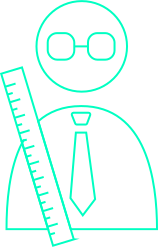
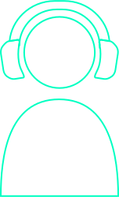
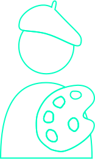
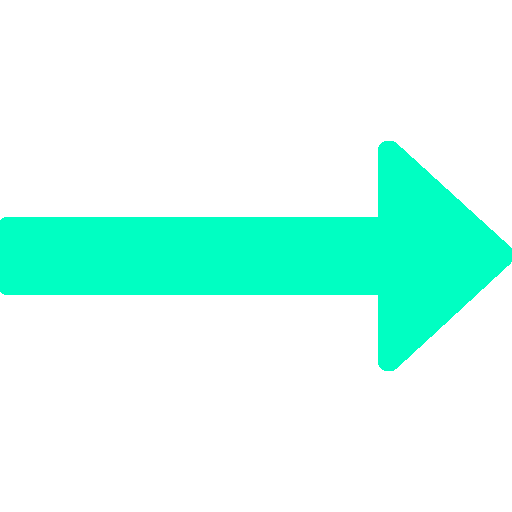
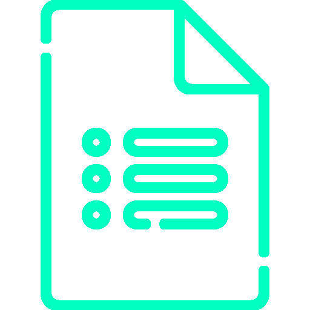
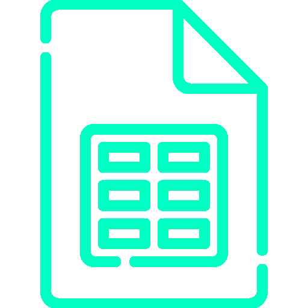

Le Travail de Fin d'Année vise à préparer les étudiants à confronter les conditions réelles du monde professionnel et à développer leur organisation personnelle. Les étudiants seront encouragés à rencontrer des utilisateurs et à trouver des solutions à leurs besoins.
Le projet est important car il prépare les étudiants à leur travail de fin d'études en leur permettant d'explorer des pistes possibles avec des utilisateurs réels avant de concrétiser leurs hypothèses.
Professeurs
Aller trouver différents professeurs de différents échelons ( dans le supérieur/secondaire) pour discuter avec eux de ce qu’il pense de l’utilisation des IA comme ChatGPT pour accomplir certaines tâches, est ce qu’il considère cette utilisation comme une triche ou non savoir aussi ce qu’en pense leurs directions. Et enfin leur poser une interrogation à propos de l’avenir du monde scolaire selon eux en cohabitation avec les avancements technologiques avec pour exemple le ChatGPT.
Joueurs
Seconde idée/pensé un peu en lien avec la première, c’est d’aller discuter avec des artistes de différents milieux afin de leur demander si réellement ils pensent que leur métier/passion pourrait disparaître et remplacer par les IA, et ce qu’ils pensent que c’est un simple effet de mode actuellement et que ça va se tasser par la suite ou même empirer.
Artistes
Et celle que j’ai choisis c’est uniquement par passion, j’aimerai aller trouver des joueurs de jeux-vidéos de tous niveaux, tout type de jeu, voir ce qui serait possible de faire, après contrairement aux autres idées, pour celles-ci je preshot pas vraiment de problématique ni j’envisage pas vraiment de solutions potentielle ou autres.
→ Pourquoi les joueurs de jeux vidéoPourquoi les joueurs de jeux vidéo ?
Parce que parmis les idées que j'avais eu pour les utilisateurs, c'est la seule que je sais que ça peut me tenir sur le temps. Je m'explique : si on choisit mal ces utilisiteaurs ou sujet, ça aurait pour incidence de réaliser ce projet par contrainte du travail et donc pas avec le coeur, l'envie et la passion.
Depuis ma tendre enfance, je suis un passionné de jeu vidéo, et avec la venue du briefing de ce projet de fin d'année, j'y ai vu l'opportunité de créer un lien entre le travail et la passion, j'aimerai apporter moi aussi quelques choses d'utiles, de drôle ou d'amusant à cette communauté.
Avant d’aller la rencontre des utilisateurs j’ai écrit un guide d’entretien d’interview, afin de sélectionner les questions les plus pertinentes pour essayer de dégager une problématique commune aux joueurs.
Voici ma méthode de travail :
Guide d’entretien
 Google form
Google sheet
Bénéfices de cette méthode de travaille
J'ai créé un document dans Google Docs pour établir mon propre guide d'entretien d'interview. C'était super pratique pour garder mes questions bien organisées et claires. Ensuite, j'ai choisi les meilleures questions pour créer un sondage en ligne avec Google Forms. J'ai partagé ce sondage sur différents réseaux pour toucher un max de personnes et obtenir un tas de réponses.
Après quelques jours, j'ai stoppé le sondage parce que j'avais déjà plein de réponses. J'ai pu rassembler suffisamment de données pour pouvoir les analyser par la suite. J'ai ensuite transféré les réponses dans un tableau sur Google Sheets. C'était bien pratique pour pouvoir visualiser les données plus facilement et les analyser de manière efficace.
En utilisant les outils Google, j'ai réussi à économiser du temps en automatisant certaines tâches. Ça m'a permis de me concentrer davantage sur l'analyse des réponses et la recherche de solutions.
Pour finir, j'ai pu accéder facilement aux résultats et partager les infos avec d'autres personnes si besoin.
En résumé, ma méthode de travail m'a permis de collecter efficacement des données grâce au sondage en ligne, d'organiser les réponses dans un tableau pour une analyse claire, et d'économiser du temps grâce à l'automatisation. Ça m'a aidé à bien identifier la problématique et à formuler des hypothèses de solutions pertinentes pour mon travail.
Grâce à la question “Est-ce que vous pourriez me citer 2-3 frustrations que vous avez eu sur les jeux-vidéo ?” j’ai pu obtenir pleins de réponses diverses et variées, mais ce qui est revenu le plus souvent c’est le mauvais comportement des joueurs en ligne qui sous couvert d'anonymat parfois se permettent bien des choses.
J’avais anticipé que la toxicité des joueurs allait être un problème mais je pensais pas non plus à ce point là, je m’attendais plus à des réponses du style, le jeu est pas fluide pas optimisé, j’ai des lags, les punitions pour les joueurs AFK sont trop légères, ou encore à propos de la difficulté du jeu ou autres. C’est donc sur la problématique du mauvais comportement des joueurs que je vais axer mes futurs hypothèses de solutions.
Best of des réponses obtenues à la question des frustrations
Créer un addon pour World of Warcraft permettant aux joueurs de noter les autres en fonction de leurs actions en jeu. Cependant, cette hypothèse soulève le risque de jugement et de stigmatisation pour les joueurs ayant un score bas, rendant difficile leur changement de comportement. Elle fait référence à l'épisode 1 de la saison 3 de Black Mirror pour illustrer les dérives d'un système de notation similaire.
Pour en lire +
Hypothèse 1: Add-on Wow
L'idée qui m'est venue assez rapidement serait de créer un add-on pour World of Warcraft (je vais parler en général pour ce jeu, mais cela peut s'appliquer à d'autres jeux également). Un add-on, c'est un peu comme une extension pour Google Chrome. On peut choisir d'en ajouter ou non, et cela ne change pas radicalement l'expérience de jeu, mais cela peut améliorer le confort du joueur.
Cet add-on permettrait aux joueurs d'évaluer et de noter les actions d'autres joueurs en jeu, qu'elles soient bonnes ou mauvaises. De plus, il offrirait la possibilité de commenter le profil d'un joueur pour justifier son choix de note. Pour être honnête, j'ai eu cette idée bien avant l'épisode 1 de la saison 3 de Black Mirror, intitulé "Chute Libre". En tant que consommateur de jeux vidéo, je me suis demandé pourquoi un add-on de ce genre n'existait pas encore. La réponse à cette question est tout simplement liée aux dérives potentielles de ce système, telles que celles explorées dans l'épisode mentionné.
Même si ce système de notation pourrait potentiellement être bénéfique pour la majorité des joueurs, il y aura toujours des cas où une personne ayant un score bas et étant considérée comme toxique souhaiterait se repentir. Cependant, en raison de son faible score, les autres joueurs pourraient continuer à le juger, à ne pas lui faire confiance, et ainsi créer un cercle vicieux de haine. Pour ce joueur, il deviendrait probablement très difficile de remonter la pente à cause du jugement des autres joueurs, plutôt que grâce à un réel changement de comportement.
Je ne vais pas vous faire un résumé détaillé de l'épisode "Chute Libre" de Black Mirror, car vous l'avez probablement déjà vu(sinon allez le voir !). Cet épisode explore les dérives humaines liées à un système de notation de la réputation et du comportement. Cela soulève des questions profondes sur la confiance, la stigmatisation et les conséquences néfastes d'une société hyperconnectée.
En résumé, l'idée d'un add-on de notation des joueurs en jeu peut sembler intéressante au premier abord, mais elle soulève également des préoccupations quant aux effets négatifs potentiels. Bien que certains joueurs pourraient bénéficier de cette fonctionnalité pour signaler des comportements inappropriés, il est essentiel de prendre en compte les risques de stigmatisation, de jugement et de perte de confiance qui pourraient découler d'un tel système. Une réflexion approfondie sur la façon de l'implémenter de manière éthique et équilibrée serait nécessaire pour éviter les dérives décrites dans des œuvres de fiction telles que Black Mirror.
Une autre idée consiste à permettre aux joueurs de se connecter les uns avec les autres plutôt que de jouer avec des joueurs aléatoires. Cela impliquerait de créer un système qui met en relation directe les joueurs pour diverses activités, sans avoir à créer un nouveau serveur Discord ou autre plateforme similaire.
Pour en lire +
Hypothèse 2: Adopteunjoueur.com
J'ai une autre idée que j'aimerais partager et développer davantage. L'idée serait de partir du principe que lorsque je joue à un jeu, plutôt que d'être associé à un joueur aléatoire avec un comportement imprévisible, je pourrais rencontrer des joueurs via une application ou une plateforme similaire qui me permettrait de choisir avec qui je joue. En d'autres termes, la solution consisterait à mettre en relation les joueurs entre eux pour différentes activités de jeu, sans avoir à créer un autre canal de communication comme un serveur Discord supplémentaire.
L'idée de pouvoir choisir avec qui jouer repose sur le constat que l'expérience de jeu peut être grandement influencée par les interactions avec les autres joueurs. Parfois, lorsqu'on se retrouve avec un joueur aléatoire, on peut tomber sur quelqu'un qui a un comportement inadapté, toxique ou qui ne correspond tout simplement pas à nos attentes de jeu. Cela peut gâcher l'expérience et rendre difficile la formation de liens sociaux agréables.
En mettant en place un système qui permet aux joueurs de se connecter entre eux, nous aurions la possibilité de rechercher des partenaires de jeu qui partagent les mêmes intérêts, les mêmes objectifs ou simplement une façon de jouer similaire. Cela permettrait de favoriser des interactions plus positives et de créer des relations de jeu durables.
Imaginez une application ou une plateforme dédiée qui regroupe des joueurs selon leurs préférences de jeu. Par exemple, je pourrais indiquer mes préférences de mode de jeu, mes horaires de disponibilité et mes préférences de communication. L'application me proposerait ensuite des joueurs qui correspondent à mes critères, avec qui je pourrais choisir de jouer.
Ce système de mise en relation des joueurs aurait de nombreux avantages. Tout d'abord, cela permettrait de réduire les interactions négatives avec des joueurs toxiques ou peu coopératifs, en me permettant de choisir des partenaires de jeu qui partagent mes valeurs et ma vision du jeu. Ensuite, cela favoriserait la création de communautés plus soudées et solidaires, où les joueurs se connaissent et jouent régulièrement ensemble. Cela pourrait également faciliter la formation de groupes de jeu pour des activités plus complexes et collaboratives, comme des raids ou des donjons.
En outre, cette approche offrirait une expérience de jeu plus personnalisée et immersive. Au lieu de jouer avec des inconnus à chaque fois, je pourrais me retrouver avec des joueurs familiers et créer une dynamique de groupe plus harmonieuse. Cela pourrait également encourager l'échange de conseils, d'astuces et de stratégies entre joueurs, ce qui contribuerait à améliorer les performances individuelles et collectives.
Cependant, il convient de prendre en compte certains défis potentiels. La mise en relation des joueurs nécessiterait une plateforme fiable et sécurisée, qui garantisse la confidentialité des informations personnelles et prévienne les abus ou le harcèlement. De plus, il faudrait veiller à ce que le système soit suffisamment flexible pour s'adapter aux différents styles de jeu, aux niveaux de compétence et aux préférences de chaque joueur.
En conclusion, l'idée de mettre en relation les joueurs entre eux pour différentes activités de jeu pourrait transformer l'expérience de jeu en offrant la possibilité de choisir ses partenaires de jeu et de créer des liens plus forts et plus positifs. Cela permettrait de favoriser une meilleure coopération, une ambiance de jeu plus agréable et des performances améliorées. Bien sûr, la mise en œuvre d'un tel système nécessiterait une réflexion approfondie sur les aspects techniques, la sécurité et la convivialité, mais les avantages potentiels en termes de satisfaction et de qualité de jeu en vaudraient certainement la peine.
La troisième idée consiste à créer une application/jeu humoristique sous forme de questionnaire, appelé "toxicity checker", avec des réponses à sélectionner. Le score obtenu détermine un feedback moralisateur. Deux questionnaires distincts seront développés pour World of Warcraft et League of Legends, offrant des questions précises.
Pour en lire +
Hypothèse 3: Toxicity Checker
J'ai une autre idée que je vais probablement suivre pour la suite. Il s'agit de créer un "toxicity checker" sous la forme d'une application ou d'un jeu humoristique. Ce serait un questionnaire où, à chaque question, il y aurait 4 réponses parmi lesquelles on devrait en sélectionner une. Chaque réponse aurait un score caché qui lui serait attribué. À la fin du questionnaire, un feedback serait donné en fonction du score obtenu, accompagné d'un message de sensibilisation moralisateur.
Pour le moment, j'envisage de créer deux questionnaires, un pour World of Warcraft et un autre pour League of Legends. En ciblant directement ces jeux, je pourrais formuler des questions plus spécifiques et adaptées à leur contexte.
L'objectif de ce "toxicity checker" humoristique serait de sensibiliser les joueurs aux comportements toxiques et d'encourager une communauté de jeu plus respectueuse et agréable. En utilisant l'humour, nous pourrions aborder des sujets sensibles de manière légère et amusante, tout en transmettant des messages importants sur le respect, la coopération et la tolérance.
Le questionnaire permettrait aux joueurs de réfléchir à leurs réactions et à leurs comportements en ligne. En évaluant les réponses, le joueur aurait un aperçu de son attitude et pourrait prendre conscience de certaines attitudes toxiques qu'il pourrait avoir sans s'en rendre compte. Le feedback moralisateur à la fin du questionnaire servirait à renforcer cette prise de conscience et à encourager des changements positifs dans le comportement du joueur.
Il serait intéressant de développer le "toxicity checker" en ajoutant des fonctionnalités supplémentaires. Par exemple, on pourrait inclure des conseils et des ressources pour aider les joueurs à améliorer leur comportement en ligne, des témoignages d'autres joueurs qui ont réussi à changer leurs attitudes toxiques, ainsi que des informations sur l'impact des comportements toxiques sur la communauté de jeu.
De plus, pour rendre l'expérience plus engageante et divertissante, on pourrait intégrer des éléments ludiques dans le jeu, comme des mini-jeux ou des récompenses virtuelles, qui seraient débloqués en fonction des scores obtenus dans le "toxicity checker". Cela encouragerait les joueurs à participer et à s'impliquer davantage dans le processus de sensibilisation.
En résumé, l'idée du "toxicity checker" humoristique sous forme d'application ou de jeu permettrait de sensibiliser les joueurs aux comportements toxiques tout en les divertissant. En fournissant un feedback moralisateur et des conseils, nous pourrions encourager les joueurs à réfléchir à leur attitude en ligne et à adopter un comportement plus respectueux. Cette approche ludique et engageante pourrait contribuer à créer une communauté de jeu plus saine et agréable, où les joueurs se traitent mutuellement avec respect et coopération.
Grâce à la question “Est-ce que vous pourriez me citer 2-3 frustrations que vous avez eu sur les jeux-vidéo ?” j’ai pu obtenir pleins de réponses diverses et variées, mais ce qui est revenu le plus souvent c’est le mauvais comportement des joueurs en ligne qui sous couvert d'anonymat parfois se permettent bien des choses.
J’avais anticipé que la toxicité des joueurs allait être un problème mais je pensais pas non plus à ce point là, je m’attendais plus à des réponses du style, le jeu est pas fluide pas optimisé, j’ai des lags, les punitions pour les joueurs AFK sont trop légère, ou encore à propos de la difficulté du jeu ou autre. C’est donc sur la problématique du mauvais comportement des joueurs que je vais axer mes futurs hypothèses de solutions.
Le but de Toxicity Checker est de sensibiliser les joueurs à propos de leur mauvais comportement et de leur donner envie par l’humour de faire le questionnaire et pourquoi pas même refaire le questionnaire pour essayer de découvrir plus de questions ou même d’autres feedback à la fin.
A titre de comparaison je vois un peu de ce que je souhaite réaliser mon questionnaire un peu comme le test de pureté, les gens le font parce que c’est drôle et décalé, et c’est exactement ce que j’envisage de faire. Les personnes font le test de pureté soit par un pote à eux l’a fait et lui à demander de le faire pour rigoler et comparé les résultat (c’est comme ça que j’ai connu ce test), 2e option les gens ont vu des personnes le faire et ont vu que c’était drôle et ont eu envie de connaître leurs résultats.
Au-delà de l’humour, de faire rire les futurs utilisateurs, le but premier de Toxicity Checker est de sensibiliser les joueurs aux mauvais comportements, je pense pas anéantir la toxicité, mais si je peux au moins convertir une personne mon objectif sera accomplie.